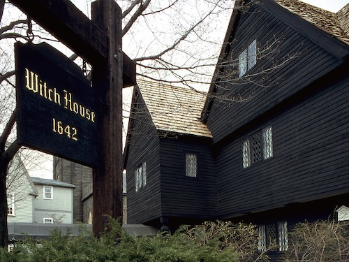
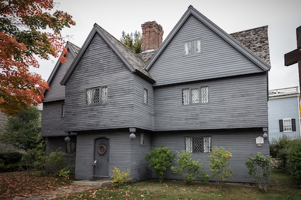

Witch House
The Witch House is the former home of Judge Jonathan Corwin and is the only remaining structure directly connected to the Salem Witch Trials of 1692.
 The house was built in 1642 and features a distinctive steeply pitched roof and overhanging second story, characteristic of early colonial architecture. It is now a museum that offers insights into the history of the witch trials and colonial life in Salem.